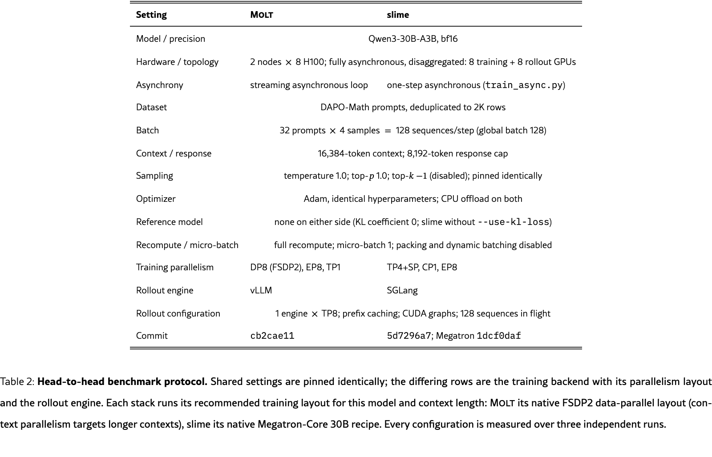
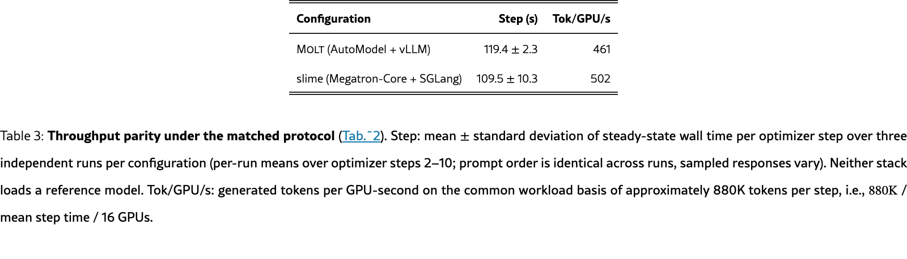
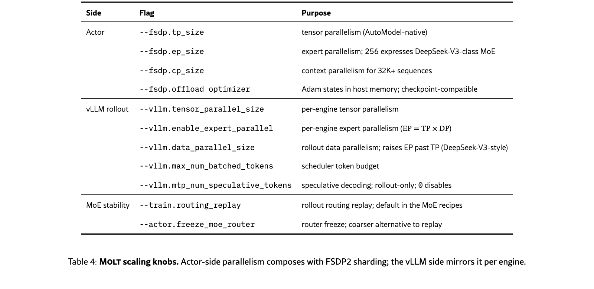

Molt is a PyTorch-native framework for agentic reinforcement learning designed around readability, token-exact data flow, and explicit policy-version semantics. It composes ordinary Python agents, vLLM rollout engines, a FSDP2 policy actor built with NeMo AutoModel, and a Ray asynchronous queue into one training loop. The same architecture supports multimodal and mixture-of-experts models and scales from 4B dense models to 700B MoE models.
The paper reports statistically comparable step-time throughput to a recommended slime/Megatron configuration under a matched workload. That result must be interpreted narrowly: a distributed-MoE forward mismatch caused the benchmark batch to be rejected by Molt's consistency gate, so the measurements characterize system throughput without an effective policy update. The work therefore provides strong architectural transparency but not yet convergence or final-policy parity.
图 1：The whole system: three components and one loop. Molt composes user agents in plain Python, vLLM rollout engines behind a request router, and a single FSDP2 policy actor on NeMo AutoModel around one Ray asynchronous queue that implements the streaming pool and partial rollout. Trajectories flow token-exactly from the engines through the queue into training, and weight refit returns over NCCL directly to the engines, bypassing the request router. · 论文原始 HTML表 1：Framework comparison: the lean point in the design space. Molt trains with FSDP2/EP/CP on NVIDIA AutoModel; slime’s FSDP backend is experimental; Molt and OpenRLHF orchestrate vLLM under Ray. 1RL code counts every Python file used by the RL entry path, trainer, rollout, orchestration, experience/advantage/loss, and imported model/utility/parallelism code, excluding pure SFT/DPO trainers, reward-model training, vendored code, tests, examples, and docs; counts trace the import graph from each RL entry point. Measured at verl 86e8123, slime 243773c, OpenRLHF b3d2927 (2026-06-16); Molt 2026-07-07. LOC measures implementation footprint, not usability or correctness. · 论文原始 HTML

表 2：Head-to-head benchmark protocol. Shared settings are pinned identically; the differing rows are the training backend with its parallelism layout and the rollout engine. Each stack runs its recommended training layout for this model and context length: Molt its native FSDP2 data-parallel layout (context parallelism targets longer contexts), slime its native Megatron-Core 30B recipe. Every configuration is measured over three independent runs. · 论文原始 HTML

表 3：Throughput parity under the matched protocol (Tab.˜2). Step: mean ±\pm standard deviation of steady-state wall time per optimizer step over three independent runs per configuration (per-run means over optimizer steps 2–10; prompt order is identical across runs, sampled responses vary). Neither stack loads a reference model. Tok/GPU/s: generated tokens per GPU-second on the common workload basis of approximately 880K tokens per step, i.e., 880K880\mathrm{K} / mean step time / 16 GPUs. · 论文原始 HTML

表 4：Molt scaling knobs. Actor-side parallelism composes with FSDP2 sharding; the vLLM side mirrors it per engine. · 论文原始 HTML
已按论文顺序附上 arXiv HTML 中全部 5 个公开图表容器，均为页面渲染截图，未人工重排数值；没有未附上的公开图表。复杂内容以 原论文 为准。
A cross-platform desktop All-in-One assistant for Claude Code, Codex, OpenCode, OpenClaw, Grok Build & Hermes Agent. Only official website: ccswitch.io
Qlib is an AI-oriented Quant investment platform that aims to use AI tech to empower Quant Research, from exploring ideas to implementing productions. Qlib supports diverse ML modeling paradigms, including supervised learning, market dynamics modeling, and RL, and is now equipped with https://github.com/microsoft/RD-Agent to automate R&D process.
:hedgehog: PostHog is the leading platform for building self-driving products. Our developer tools – AI observability, analytics, session replay, flags, experiments, error tracking, logs, and more – capture all the context agents need to diagnose problems, uncover opportunities, and ship fixes. Steer it all from Slack, web, desktop, or the MCP.
![table 1: Framework comparison: the lean point in the design space. Molt trains with FSDP2/EP/CP on NVIDIA AutoModel; slime’s FSDP backend is experimental; Molt and OpenRLHF orchestrate vLLM under Ray. 1RL code counts every Python file used by the RL entry path, trainer, rollout, orchestration, experience/advantage/loss, and imported model/utility/parallelism code, excluding pure SFT/DPO trainers, reward-model training, vendored code, tests, examples, and docs; counts trace the import graph from each RL entry point. Measured at verl 86e8123, slime 243773c, OpenRLHF b3d2927 (2026-06-16); Molt 2026-07-07. LOC measures implementation footprint, not usability or correctness.](morning-brief-2026-07-28-assets/molt-table-1.png)